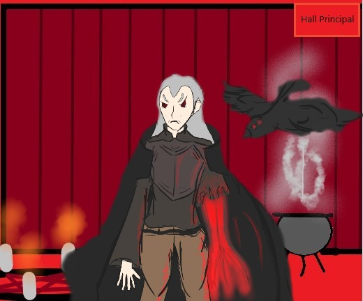

<html><body style="background-color:lightcoral;">
</body>
  <head>
    <meta charset="utf-8">
    <title>Salle de sacrifice</title>
    <link href="style.css" rel="stylesheet" type="text/css" />
    <script src="script.js"></script>
  </head>
  <body>
    <h1>Salle de sacrifice</h1>

    

    <map name="carte_salle1" >
      <area shape="rect" coords="670,1,770,69" href="../Hall principal/Hall.html" >
      
    </map>

    <audio src="Swain_Noah_nul_musique.mp3" autoplay controls>
      
    </audio>
    <script>
      function play(element){
         var audio = document.getElementById(element);
         audio.play();
                   }
      </script>
      
      <input type="button" value="Interrogez Le Type louche"  onclick="play('audio1')">
      <audio id="audio1" src="Swain.m4a" ></audio>
      
      
  </body>
</html>